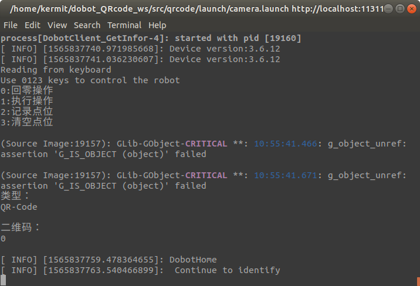

前言
在越疆实习的时候并没有问部门里的人自己该干什么，所以似乎也没有什么任务交给我做。由于在培训的时候接触到了ROS，也就顺水推舟地朝着这个方向学了下去。第一周学习用ROS控制机械臂，消息、服务、启动文件之类的也都了解了大概。接下来就试着朝Opencv这一方面研究，在完成打开摄像头，人脸识别等简单项目后，我脑中浮现出了这个项目，二维码控制机器人。
这个构思的诞生，说来也是意外之思。当时我做完人脸识别项目后，看到《ROS机器人开发实践》这本书上后面的二维码识别,联想到其他班的同学的一个轮式机器人编队的项目，听说他那个项目中是通过二维码来确定小车的位置。于是我就想，我是不是也可以通过二维码传输指令给机械臂，以此控制机械臂运动呢？深入思考之后，发现可行，网上也有识别二维码的代码，只要将两者合在一块就能实现了。
虽说书上是有二维码识别的讲述，但是我并没有采用上面的方法。原因很简单，因为我并没有向部门里的人要摄像头，所以我现有的设备除了机械臂和气泵装置外，只有我笔记本自带的摄像头了。而书上的方法第一步就将我卡住了，因为它需要标定摄像头。我寻思着我这破摄像头也没法标定啊，只能放弃这个方法。所幸，根据之前做人脸识别的经验，我想到只要对摄像头获取的每一帧进行图像处理，即视觉识别即可。
终于，经过几天的查资料，自己折腾，我顺利做出了一个简单的版本。
概述
运用OpenCV库调取摄像头的画面，然后使用Zbar库中的函数扫描画面，获取画面中存在的二维码的信息，并以ros消息的形式发布到话题上，由客户端节点订阅到话题上的消息后，调用加载到服务端的动态链接库来控制机械臂执行相应的命令
搭建开发环境
Linux系统
我使用的是Ubuntu 18.04。安装Linux系统的教程网上很多，自行寻找。
机器人操作系统ROS
从官网上安装对应linux系统的ROS，步骤很详细，一步一步照做即可
OpenCV库
ROS中已经集成了OpenCV库以及相关接口功能包，如果你安装的是全桌面版的ROS，那么电脑中大概已经有OpenCV了。如果电脑中并没有OpenCV，那么可以通过以下命令来安装：1
$ sudo apt-get install ros-kinetic-vision-opencv libopencv-dev python-opencv
其中ros-kinetic-vision-opencv中的kinetic可以替换成相应的ros版本
Zbar库
ZBar是一个开源库,用于扫描、读取二维码和条形码。
通过Zbar，我们可以扫描图像，检测其中的二维码，并且解析出其中的消息。
要在Ubuntu中使用Zbar，我们首先要安装Zbar库。下面是安装步骤：
通过命令行直接下载zbar
1
$ wget http://downloads.sourceforge.net/project/zbar/zbar/0.10/zbar-0.10.tar.gz
进入压缩包所在的文件夹直接解压
1
$ tar -zvxf zbar-0.10.tar.gz
安装相关依赖
1
2$ sudo apt-get install python-gtk2-dev
$ sudo apt-get install libqt4-dev编译Zbar
1
2
3
4$ ./configure --enable-shared --disable-video --without-python --without-gtk --without-qt --without-imagemagick CFLAGS=""
$make
$sudo make install
$sudo ldconfig运行examples
1
2
3$cd example
$gcc scan_image.c -o scan_image -lzbar -lpng
$./scan_image barcode.png输出结果：
decoded EAN-13 symbol "9876543210128"
运行流程
先由qrcode包中的my_pulisher节点打开摄像头，获取画面并且以消息的形式发布到话题“camera/image”上。
然后由my_subscriber节点扫描从话题“camera/image”上订阅到的图像。如果从图像中扫描到图像中的二维码，那么将解析出来的指令信息发布到话题“GetCtrl_msg”上。
最后由dobot包中的DobotClient_PTP节点订阅话题”GetCtrl_msg”上的指令，并根据指令，向服务端DobotServer节点请求相应的服务，控制机械臂。
代码分析
my_publisher
该节点是打开摄像头，并获取摄像头图像消息，发布到话题”camera/image”的代码。
程序1.1加载ROS、Opencv头文件1
2
3
4
5#include <ros/ros.h>
#include <image_transport/image_transport.h>
#include <opencv2/highgui/highgui.hpp>
#include <cv_bridge/cv_bridge.h>
#include <sstream> // for converting the command line parameter to integer
程序1.2初始化节点1
2ros::init(argc, argv, "image_publisher");
ros::NodeHandle nh;
程序1.3注册话题到ROS Master上1
2image_transport::ImageTransport it(nh);
image_transport::Publisher pub = it.advertise("camera/image", 1); //在发布图像消息时消息队列的长度只能是1
程序1.4 打开摄像头1
2
3
4
5
6
7
8
9
10
11
12
13
14
15
16
17
18
19
20
21
22
23
24
25
26
27
28
29
30
31
32
33
34// Convert the passed as command line parameter index for the video device to an integer
int video_source;
bool check=ros::param::get("/image_publisher/video",video_source);
/*检查视频源是否已作为参数传递*/
if(check == 0)
{
ROS_INFO("no camera %d\n",video_source);
return 1;
}
cv::VideoCapture cap(video_source);
//判断视频读取或者摄像头调用是否成功
if(!cap.isOpened())
{
ROS_INFO("can not opencv video device\n");
return 1;
}
程序1.5 发布摄像头图像消息到话题”camera/image”上
//ROS中的图像消息类型
sensor_msgs::ImagePtr msg;
ros::Rate loop_rate(5);
while (nh.ok())
{
cap >> frame;
// Check if grabbed frame is actually full with some content
if(!frame.empty())
{
//将opencv格式的图像转化为ROS所支持的消息类型
msg = cv_bridge::CvImage(std_msgs::Header(), "bgr8", frame).toImageMsg();
pub.publish(msg);
//cv::Wait(1);
}
}
my_subscriber
该节点则是将订阅到的图像消息进行图像处理，即二维码识别。
在识别到二维码后，将解析出来的信息以消息的形式发布到话题”GetCtrl_msg”上。
其中，wait这个变量是为了在识别过后等待一段时间在识别下一个二维码。
程序2.1 加载ROS，OpenCV，Zbar的头文件和命名空间1
2
3
4
5
6
7
8
9
10
11
12
13
14
15
16
17
18
19
20
21
22
23
24
25
26#include <ros/ros.h>
#include "std_msgs/String.h"
#include "iostream"
#include "string.h"
#include "fstream"
#include "signal.h"
#include <termios.h>
#include <math.h>
#include <stdio.h>
#include <stdlib.h>
#include <sys/poll.h>
#include <boost/thread/thread.hpp>
#include "opencv2/core/core.hpp"
#include "opencv2/highgui/highgui.hpp"
#include "opencv2/imgproc/imgproc.hpp"
#include <opencv2/opencv.hpp>
#include <image_transport/image_transport.h>
#include <cv_bridge/cv_bridge.h>
#include <zbar.h>
#define oo 1e9+7
using namespace std;
using namespace zbar; //添加zbar名称空间
using namespace cv;
程序 2.2 初始化节点，窗口，并注册发布和订阅的话题1
2
3
4
5
6
7
8
9ros::init(argc, argv, "image_listener");
ros::NodeHandle nh;
cv::namedWindow("Source Image");
//开始窗口线程
cv::startWindowThread();
image_transport::ImageTransport it(nh);
signal(SIGINT, MySigintHandler);
ros::Publisher pub=nh.advertise<std_msgs::String>("GetCtrl_msg",1000);
image_transport::Subscriber sub = it.subscribe("camera/image", 1,boost::bind(&imageCallback,_1,boost::ref(pub)));
程序2.3 订阅到图像消息后回调函数1
2
3
4
5
6
7
8
9
10
11
12
13
14
15
16
17
18
19
20
21
22
23
24
25
26void imageCallback(const sensor_msgs::ImageConstPtr& msg,ros::Publisher pub)
{
try
{
Mat image=cv_bridge::toCvShare(msg, "bgr8")->image;
imshow("Source Image", image);
if(wait==100){
wait=-1;
ROS_INFO(" Continue to identify ");
}
else if(wait!=-1){
wait++;
return;
}
cvtColor(image, image, CV_RGB2GRAY);
if(Scan(image,pub)){
wait=0;
}
//waitKey(30);
}
catch (cv_bridge::Exception& e) //异常处理
{
ROS_ERROR("Could not convert from '%s' to 'bgr8'.", msg->encoding.c_str());
}
}
程序2.4 使用Zbar库识别二维码并发布解析出来的消息1
2
3
4
5
6
7
8
9
10
11
12
13
14
15
16
17
18
19
20
21
22
23
24
25
26
27
28
29
30
31bool Scan(Mat image,ros::Publisher pub){
//zbar类，定义扫描器
ImageScanner scanner;
//配置参数，初始化
scanner.set_config(ZBAR_NONE, ZBAR_CFG_ENABLE, 1);
int width = image.cols;
int height = image.rows;
uchar *raw = (uchar *)image.data;
//封装图像数据 Y800单色图像格式
Image imageZbar(width, height, "Y800", raw, width * height);
//扫描条码或者二维码
scanner.scan(imageZbar);
for (Image::SymbolIterator symbol = imageZbar.symbol_begin(); symbol != imageZbar.symbol_end(); ++symbol)
{
cout << "类型：" << endl << symbol->get_type_name() << endl << endl;
cout << "二维码：" << endl << symbol->get_data() << endl << endl;
//发布消息到话题“GetCtrl_msg”上
std_msgs::String msg;
msg.data=symbol->get_data();
pub.publish(msg);
imageZbar.set_data(NULL, 0);
return 1;
}
//清除缓存
imageZbar.set_data(NULL, 0);
return 0;
}
DobotClient_PTP
该节点是订阅话题”GetCtrl_msg”上的指令消息，并做出相应的行为。
程序3.1 初始化节点1
2ros::init(argc, argv, "DobotClient");
ros::NodeHandle n;
程序3.2 注册订阅器1
ros::Subscriber sub = n.subscribe<std_msgs::String>("GetCtrl_msg", 1000,messageCallback);
程序3.3 回调函数1
2
3
4
5
6
7void messageCallback(const std_msgs::String::ConstPtr &msg){
std::string cmd=msg->data.c_str();
if(cmd=="0")DobotHome();
else if(cmd=="1")Action();
else if(cmd=="2")getPoint();
else if(cmd=="3")Point.clear();
}
以上DobotHome(),Action(),getPoint()函数中就是通过服务请求的方式向 DobotServer节点请求相应的服务，此处并未展现。
结果测试
启动ros master1
$ roscore
打开新终端，运行DobotServer1
$ rosrun dobot DobotServer
打开新终端，启动launch文件，可同时打开qrcode功能包中的my_subscriber和my_publisher节点，dobot功能包中的DobotClient_PTP和DobotClient_GetInfor。1
$ roslaunch qrcode camera.launch
启动文件成功运行后，将含有指令信息的二维码对准摄像头，控制机械臂运动。
0 回零 1 执行 2 记录点位 3 清空点位
通过按下机械臂上的解锁按钮，手动移动机械臂。当松开按钮时，机械臂将自动记录末端点位。
以上操作也可以通过键盘来操控机械臂运动，按下0～3相应的按键可操作。按Ctrl+C可终止启动文件。

不足之处
- 实现的功能过少
- 有时候会一下子识别好几次二维码，原因不明。
- 其实很多节点都可以合并成一处。不过分到不同节点上去也可以使人对于节点间的通讯更加了解。
总结
这个项目可以说是把我这一个月来所学的东西都揉在一块，ROS、OpenCV、Zbar……作为我本次实习出来的结果也算是令人满意。
原本作为一个大一刚刚结束的学生，其实根本没想过自己实习的时候能做些什么，毕竟一开始什么也不会，ROS,OpenCV这些也只不过是听过而已。但是经过三个周的自我探索，对这些东西也有了一个初步的了解，对于脑中时不时浮现的奇思妙想也有更加具体的构思，而并非以前那样的天马行空，形而上学。
大一实习生到底能做些什么呢？我觉得什么都做不了，但什么都能做。
毕竟大一接触的专业知识并不多，大多还只是通识教育。若是在实习初期就告诉我要做个balabala玩意我估计会一脸懵逼，不知所云。
但是我不会毫无办法，甚至逃避现实。因为我深知工作中所运用的大部分知识都根本没有必要非得在学校里学习，这些只是完全是可以通过自学来掌握的。没有学过的东西，只要不是必须需要非常高深的理论知识，我们完全可以现学现用。像是ROS和OpenCV这类东西，学校里一般是不会教学生的，基本上需要学生自学掌握。
在做项目的过程中也不一定非要完全掌握了某样东西才能去做。学海无涯，bug不止，哪有人能百分百的精通一个技能。人总会遇到自己无法解决的问题，这个时候只要百度，谷歌一下，总能找到解决方法。
重要的，是耐下心来，脚踏实地，慢慢探索。
我其实很感谢我高中学习竞赛的那段经历。
虽然我并没有获得完美的收场，但是我的确收获了很多。
编程的入门，算法的理解，搜索的方法，以及……自学的觉悟。
因为在看题解的时候，我常常会遇到一些我没有学过的，老师也没讲过（虽然老师很少讲东西）的新算法或者数据结构。一开始，我大惊小怪，感到很坑，怀着这玩意是高级货的心态去学习，弄得自己好像是刚出新手村就碰见四大天王的勇者。然而后来这种事情经历的多了，也就习以为常了，碰到不懂的东西？莽就完事了。对我而言，很少有东西是自学学不会的（动手操作除外），只要肯投入实践，到处查资料，自己折腾一番，最后总能搞出个所以然来。
此文到此结束，感谢观看。